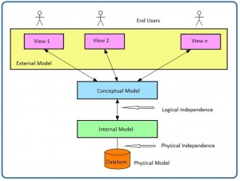

Data Modelling
نمذجة البيانات
النص الرئيسي
Key Terms
conceptual model: the logical structure of the entire database
conceptual schema: another term for logical schema
data independence: the immunity of user applications to changes made in the definition and organization of data
data model:a collection of concepts or notations for describing data, data relationships, data semantics and data constraints
data modelling: the first step in the process of database design
database logical design: defines a database in a data model of a specific database management system
database physical design: defines the internal database storage structure, file organization or indexing techniques
entity relationship diagram (ERD): a data model describing the database showing tables, attributes and relationships
external model: represents the user’s view of the database
external schema: user view
internal model: a representation of the database as seen by the DBMS
logical data independence: the ability to change the logical schema without changing the external schema
logical design: where you create all the tables, constraints, keys, rules, etc.
logical schema: a conceptual design of the database done on paper or a whiteboard, much like architectural drawings for a house
operating system (OS): manages the physical level of the physical model
physical data independence: the immunity of the internal model to changes in the physical model
physical model: the physical representation of the database
schema: an overall description of a database
نمذجة البيانات (data modelling) هي الخطوة الأولى في عملية تصميم قاعدة البيانات (database). وتُعد هذه الخطوة في بعض الأحيان مرحلة تصميم عالية المستوى ومجرَّدة، تُشار إليها أيضًا باسم التصميم المفاهيمي. وهدف هذه المرحلة هو وصف:
Exercises
Describe the purpose of a conceptual design.
How is a conceptual design different from a logical design?
What is an external model?
What is a conceptual model?
What is an internal model?
What is a physical model?
Which model does the database administrator work with?
Which model does the end user work with?
What is logical data independence?
What is physical data independence?
Also see Appendix A: University Registration Data Model Example
- البيانات (data) المضمَّنة في قاعدة البيانات (مثل: الكيانات (entities): الطلاب والمحاضرون والمقررات والمواد الدراسية)
- العلاقات (relationships) بين عناصر البيانات (مثل: يشرف المحاضرون على الطلاب؛ ويقوم المحاضرون بتدريس المقررات)
- القيود (constraints) على البيانات (مثل: رقم الطالب يتكون من ثمانية أرقام بالضبط؛ وأن تتكون المادة الدراسية من أربع أو ست وحدات ائتمانية فقط)
وفي الخطوة الثانية، تُعبَّر عناصر البيانات والعلاقات والقيود جميعًا باستخدام المفاهيم التي يوفّرها نموذج البيانات عالي المستوى. ولأن هذه المفاهيم لا تتضمّن تفاصيل التنفيذ، فإن نتيجة عملية نمذجة البيانات هي تمثيل شبه رسمي لبنية قاعدة البيانات. وهذه النتيجة سهلة الفهم إلى حد كبير، ولذلك تُستخدم كمرجع للتأكد من أن جميع متطلبات المستخدم قد تحققت.
أما الخطوة الثالثة فهي تصميم قاعدة البيانات. وخلال هذه الخطوة، قد تكون لدينا خطوتان فرعيتان: واحدة تُسمى التصميم المنطقي لقاعدة البيانات (database logical design)، وتعرّف قاعدة البيانات ضمن نموذج بيانات نظام إدارة قواعد بيانات (DBMS) محدد، وأخرى تُسمى التصميم المادي لقاعدة البيانات (database physical design)، وتعرّف بنية التخزين الداخلية لقاعدة البيانات أو تنظيم الملفات أو تقنيات الفهرسة. وهاتان الخطوتان الفرعيتان هما خطوتا تنفيذ قاعدة البيانات وبناء العمليات/واجهات المستخدم.
وفي مراحل تصميم قاعدة البيانات، تُمثَّل البيانات باستخدام نموذج بيانات معيّن. ونموذج البيانات هو مجموعة من المفاهيم أو الترميزات لوصف البيانات وعلاقات البيانات ودلالات البيانات وقيود البيانات. ومعظم نماذج البيانات تتضمن أيضًا مجموعة من العمليات الأساسية للتعامل مع البيانات في قاعدة البيانات.
مستويات تجريد البيانات
في هذا القسم سننظر في عملية تصميم قاعدة البيانات من حيث درجة التحديد. وكما أن أي تصميم يبدأ من مستوى عالٍ ثم ينتقل إلى مستوى متزايد من التفاصيل، فإن تصميم قاعدة البيانات كذلك يعمل. فعلى سبيل المثال، عند بناء منزل، تبدأ بتحديد كم عدد غرف النوم والحمامات التي سيحتويها المنزل، وهل سيكون على مستوى واحد أم على مستويات متعددة، إلخ. والخطوة التالية هي أن تطلب من مهندس معماري أن يصمّم المنزل من منظور أكثر تنظيمًا. وهذا المستوى يصبح أكثر تفصيلًا فيما يخص مقاسات الغرف الفعلية، وكيف سيتم تمديد الأسلاك في المنزل، وأين ستوضع التمديدات الصحية، إلخ. والخطوة الأخيرة هي التعاقد مع مقاول لبناء المنزل. وهذه نظرة إلى التصميم من مستوى عالٍ من التجريد إلى مستوى متزايد من التفاصيل.
ويُشبه تصميم قاعدة البيانات ذلك كثيرًا. فهو يبدأ بأن يحدد المستخدمون قواعد الأعمال؛ ثم يصمّم مصممو قاعدة البيانات والمحلّلون تصميم قاعدة البيانات؛ ثم ينفّذ مسؤول قاعدة البيانات (database administrator) التصميم باستخدام نظام إدارة قواعد البيانات (DBMS).
تلخّص الأقسام الفرعية التالية النماذج بترتيب تنازلي حسب مستوى التجريد.
النماذج الخارجية
- تمثّل رؤية المستخدم لقاعدة البيانات
- تحتوي على وجهات خارجية متعددة مختلفة
- ترتبط ارتباطًا وثيقًا بالعالم الحقيقي كما يدركه كل مستخدم
النماذج المفاهيمية
- توفّر قدرات مرنة في هيكلة البيانات
- تقدّم «رؤية مجتمعية»: البنية المنطقية لقاعدة البيانات بالكامل
- تحتوي على البيانات المخزَّنة في قاعدة البيانات
- تُظهر العلاقات بين البيانات، بما في ذلك: القيود (constraints)
- المعلومات الدلالية (مثل قواعد الأعمال)
- معلومات الأمان والسلامة (integrity)
لنعتبر قاعدة البيانات مجموعة من الكيانات (entities) (الأشياء) من مختلف الأنواع. وهي الأساس للتعريف والوصف عالي المستوى لعناصر البيانات الرئيسية؛ كما أنها تتجنب التفاصيل. وهي مستقلة عن قاعدة البيانات بغض النظر عن قاعدة البيانات التي ستستخدمها.
النماذج الداخلية
أشهر ثلاثة نماذج من هذا النوع هي نموذج البيانات العلائقي (relational data model)، ونموذج البيانات الشبكي (network data model)، ونموذج البيانات الهرمي (hierarchical data model). وهذه النماذج الداخلية:
- تعتبر قاعدة البيانات مجموعة من سجلات ذات حجم ثابت
- تكون أقرب إلى المستوى المادي أو إلى بنية الملف
- تمثّل قاعدة البيانات كما يراها نظام إدارة قواعد البيانات (DBMS).
- تتطلب من المصمم مطابقة خصائص وقيود النموذج المفاهيمي مع خصائص وقيود نموذج التنفيذ المختار
- تنطوي على تحويل الكيانات في النموذج المفاهيمي إلى جداول في النموذج العلائقي
النماذج المادية
- هي التمثيل المادي لقاعدة البيانات
- لها أدنى مستويات التجريد
- هي الطريقة التي تُخزَّن بها البيانات؛ فهي تتناول أداء وقت التشغيل (Run-time performance)
- استخدام التخزين والضغط
- تنظيم الملفات وطرق الوصول
- تشفير البيانات (data encryption)
وهي المستوى المادي الذي يديره نظام التشغيل (operating system, OS)، وتوفّر مفاهيم تصف تفاصيل كيفية تخزين البيانات في ذاكرة الحاسوب.
طبقة تجريد البيانات
في عرض تصويري، يمكنك أن ترى كيف تعمل النماذج المختلفة معًا. فلننظر إلى ذلك من أعلى مستوى، وهو النموذج الخارجي.
النموذج الخارجي هو رؤية المستخدم النهائي للبيانات. وعادةً ما تكون قاعدة البيانات نظامًا مؤسسيًا يخدم احتياجات أقسام متعددة. غير أن قسمًا واحدًا لا يهمه الاطلاع على بيانات الأقسام الأخرى (مثل: قسم الموارد البشرية (HR) لا يهتم الاطلاع على بيانات قسم المبيعات). ولذلك فإن رؤية مستخدم واحد تختلف عن رؤية مستخدم آخر.
يتطلب النموذج الخارجي من المصمم أن يقسّم مجموعة من المتطلبات والقيود إلى وحدات وظيفية (functional modules) يمكن فحصها ضمن إطار نماذجها الخارجية (مثل: الموارد البشرية مقابل المبيعات).
وبصفتك مصمم بيانات، عليك أن تفهم جميع البيانات كي تتمكن من بناء قاعدة بيانات على مستوى المؤسسة كلها. واستنادًا إلى احتياجات الأقسام المختلفة، فإن النموذج المفاهيمي هو أول نموذج يُنشأ.
وقما يتم اختيار نظام إدارة قواعد البيانات (DBMS)، يمكن عندئذٍ تنفيذ النموذج. وهذا هو النموذج الداخلي. وهنا تنشئ جميع الجداول والقيود والمفاتيح والقواعد إلخ. وغالبًا ما يُشار إلى هذا بالتصميم المنطقي.
وقَبل أن يتم اختيار نظام إدارة قواعد البيانات (DBMS)، يمكن عندئذٍ تنفيذ النموذج. وهذا هو النموذج الداخلي. وهنا تنشئ جميع الجداول والقيود والمفاتيح والقواعد إلخ. وغالبًا ما يُشار إلى هذا بالتصميم المنطقي.
أما النموذج المادي فهو ببساطة الطريقة التي تُخزَّن بها البيانات على القرص. ولكل مورّد لقواعد البيانات طريقته الخاصة في تخزين البيانات.

المخططات (schemas)
المخطط (schema) هو وصف شامل لقاعدة البيانات، وعادةً ما يُمثَّل بواسطة مخطط الكيانات والعلاقات (entity relationship diagram, ERD). وهناك العديد من المخططات الفرعية التي تمثّل النماذج الخارجية، وبالتالي تعرض وجهات خارجية للبيانات. وفيما يلي قائمة بالبنود الواجب مراعاتها أثناء عملية تصميم قاعدة البيانات.
- المخططات الخارجية (external schemas): يوجد منها عدة
- المخططات الفرعية المتعددة (multiple subschemas): وهذه تعرض وجهات خارجية متعددة للبيانات
- المخطط المفاهيمي (conceptual schema): يوجد واحد فقط. ويشمل هذا المخطط عناصر البيانات والعلاقات والقيود، وكلها ممثَّلة في مخطط ERD.
- المخطط المادي (physical schema): يوجد واحد فقط
استقلالية البيانات المنطقية والمادية
تشير استقلالية البيانات (data independence) إلى مناعة تطبيقات المستخدم من التغييرات التي تُجرى في تعريف البيانات وتنظيمها. وتكشف تجريدات البيانات (data abstractions) تلك البنود المهمة أو ذات الصلة بالمستخدم فحسب. أما التعقيد فيُخفى عن مستخدم قاعدة البيانات.
وتُشكّل استقلالية البيانات واستقلالية العمليات معًا خاصية تجريد البيانات. وهناك نوعان من استقلالية البيانات: منطقية ومادية.
استقلالية البيانات المنطقية
المخطط المنطقي (logical schema) هو تصميم مفاهيمي لقاعدة البيانات يُنجز على الورق أو على لوح أبيض، على غرار الرسومات المعمارية لمنزل. وتُسمى القدرة على تغيير المخطط المنطقي دون تغيير المخطط الخارجي أو رؤية المستخدم باستقلالية البيانات المنطقية (logical data independence). فعلى سبيل المثال، ينبغي أن يكون من الممكن إضافة كيانات أو خصائص أو علاقات جديدة إلى هذا المخطط المفاهيمي أو إزالتها، دون الحاجة إلى تغيير المخططات الخارجية القائمة أو إعادة كتابة برامج التطبيقات القائمة.
وبعبارة أخرى، لا ينبغي للتغييرات في المخطط المنطقي (مثل: التغييرات في بنية قاعدة البيانات مثل إضافة عمود أو جداول أخرى) أن تؤثر في وظيفة التطبيق (وجهات العرض الخارجية).
استقلالية البيانات المادية
تشير استقلالية البيانات المادية (physical data independence) إلى مناعة النموذج الداخلي من التغييرات في النموذج المادي. ويبقى المخطط المنطقي دون تغيير حتى لو جرى إدخال تغييرات على تنظيم الملفات أو بنى التخزين أو أجهزة التخزين أو استراتيجية الفهرسة.
وتتعامل استقلالية البيانات المادية مع إخفاء تفاصيل بنية التخزين عن تطبيقات المستخدم. ولا ينبغي أن تكون التطبيقات معنية بهذه المسائل، لأنه لا فرق في العملية التي تُنفَّذ على البيانات.
النموذج المفاهيمي (conceptual model): البنية المنطقية لقاعدة البيانات بالكامل
المخطط المفاهيمي (conceptual schema): مصطلح آخر للمخطط المنطقي
استقلالية البيانات (data independence): مناعة تطبيقات المستخدم من التغييرات التي تُجرى في تعريف البيانات وتنظيمها
نموذج البيانات (data model): مجموعة من المفاهيم أو الترميزات لوصف البيانات وعلاقات البيانات ودلالات البيانات وقيود البيانات
نمذجة البيانات (data modelling): الخطوة الأولى في عملية تصميم قاعدة البيانات
التصميم المنطقي لقاعدة البيانات (database logical design): يعرّف قاعدة البيانات ضمن نموذج بيانات نظام إدارة قواعد بيانات محدد
التصميم المادي لقاعدة البيانات (database physical design): يعرّف بنية التخزين الداخلية لقاعدة البيانات أو تنظيم الملفات أو تقنيات الفهرسة
مخطط الكيانات والعلاقات (entity relationship diagram, ERD): نموذج بيانات يصف قاعدة البيانات ويُظهر الجداول والخصائص والعلاقات
النموذج الخارجي (external model): يمثّل رؤية المستخدم لقاعدة البيانات
المخطط الخارجي (external schema): رؤية المستخدم
النموذج الداخلي (internal model): تمثيل لقاعدة البيانات كما يراها نظام إدارة قواعد البيانات (DBMS)
استقلالية البيانات المنطقية (logical data independence): القدرة على تغيير المخطط المنطقي دون تغيير المخطط الخارجي
التصميم المنطقي (logical design): هو المكان الذي تنشئ فيه جميع الجداول والقيود والمفاتيح والقواعد إلخ.
المخطط المنطقي (logical schema): تصميم مفاهيمي لقاعدة البيانات يُنجز على الورق أو على لوح أبيض، على غرار الرسومات المعمارية لمنزل
نظام التشغيل (operating system, OS): يدير المستوى المادي للنموذج المادي
استقلالية البيانات المادية (physical data independence): مناعة النموذج الداخلي من التغييرات في النموذج المادي
النموذج المادي (physical model): التمثيل المادي لقاعدة البيانات
المخطط (schema): وصف شامل لقاعدة البيانات
- صِف الغرض من التصميم المفاهيمي.
- كيف يختلف التصميم المفاهيمي عن التصميم المنطقي؟
- ما هو النموذج الخارجي؟
- ما هو النموذج المفاهيمي؟
- ما هو النموذج الداخلي؟
- ما هو النموذج المادي؟
- مع أي نموذج يعمل مسؤول قاعدة البيانات (database administrator)؟
- مع أي نموذج يعمل المستخدم النهائي؟
- ما هي استقلالية البيانات المنطقية؟
- ما هي استقلالية البيانات المادية؟
انظر أيضًا الملحق A: مثال نموذج بيانات تسجيل الجامعة
نسب العمل
هذا الفصل من كتاب Database Design هو نسخة مشتقة من Database System Concepts من تأليف Nguyen Kim Anh، بترخيص Creative Commons Attribution License 3.0 license
كُتبت المواد التالية من إعداد Adrienne Watt:
- بعض أو كل مما ورد في المقدمة، مستويات تجريد البيانات، طبقة تجريد البيانات
- المصطلحات الأساسية
- تمارين